IMAGE WARPING, MOSAICING & AUTOSTITCHING
Projective transformations, homography estimation via least-squares, inverse warping with scratch-implemented Nearest Neighbor and Bilinear interpolation, planar rectification, and panoramic photo mosaicing with 2D distance-weighted alpha blending (Part 4A), followed by fully automated feature detection (Harris & ANMS), MOPS descriptor extraction, Lowe's ratio test matching, and 4-point RANSAC autostitching (Part 4B).
Project Overview & Objectives
In this project, we explore the geometry of projective transformations to align, rectify, and stitch images into seamless panoramas. When photos of a scene are captured by rotating a camera around its Center of Projection (COP), the transformation between any two overlapping views is governed by a 2D homography (a projective transformation with 8 degrees of freedom).
In accordance with the project guidelines, high-level transformation functions such as cv2.findHomography, cv2.warpPerspective, cv2.getPerspectiveTransform, skimage.transform.ProjectiveTransform, and scipy.interpolate.griddata were not used. Every component—from least-squares homography recovery to inverse warping and dual interpolation algorithms (Nearest Neighbor and Bilinear)—was engineered from first principles in NumPy.
A.1: Shoot and Digitize Pictures
To satisfy the requirements of a projective transformation, adjacent photographs must be captured while holding the camera's Center of Projection (COP) fixed, rotating purely in pan and tilt. Moving the camera spatially (translation) would introduce parallax, where near objects shift relative to distant backgrounds, violating the homographic assumption.
Each image set was photographed with 50% to 70% field-of-view overlap to ensure an abundance of salient visual features across the shared region. Camera exposure and white balance were held consistent to minimize photometric discrepancy.
Image Set 1: Piedmont Avenue Overlook
Captured overlooking the Berkeley hills from Piedmont Avenue near California Memorial Stadium. Rich in natural terrain, trees, distant bay landmarks, and building architecture.
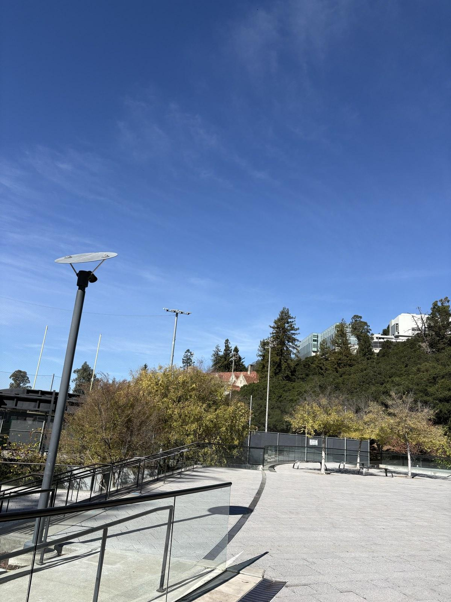
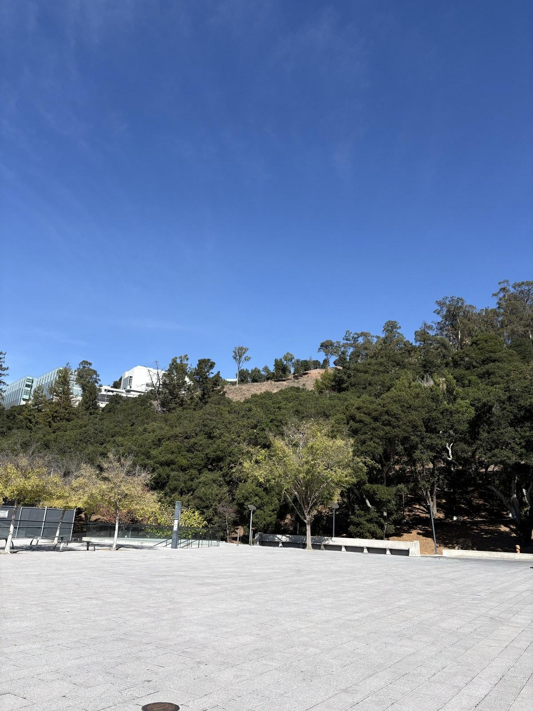
Image Set 2: Lewis Hall (UC Berkeley Campus)
Captured in the College of Chemistry complex on the UC Berkeley campus. Features crisp geometric brick patterns, windows and structural pillars for testing precision alignment.
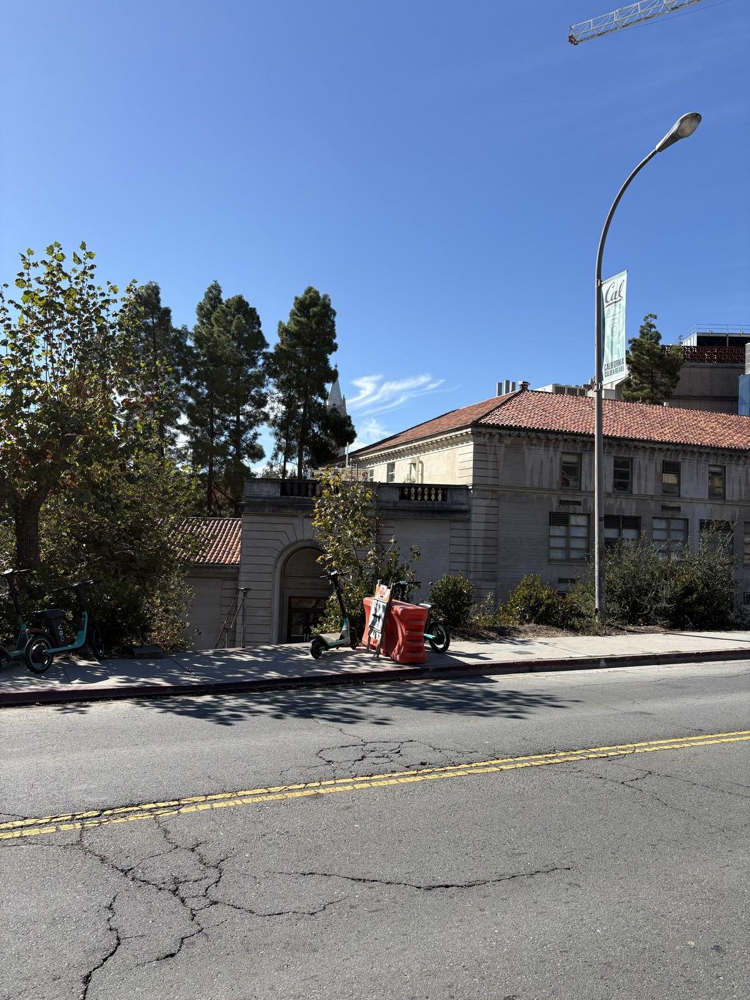
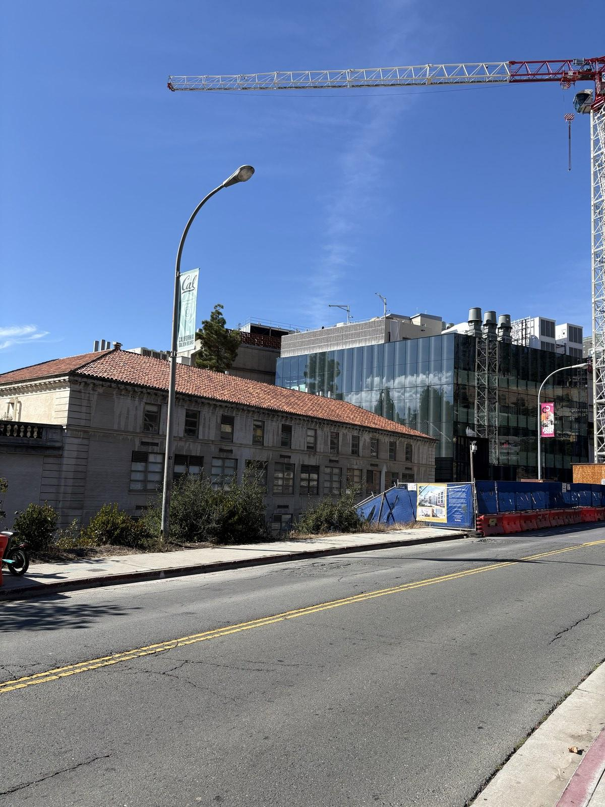
Image Set 3: California Memorial Stadium
Captured at the California Memorial Stadium (Cal Football). Showing the iconic stadium exterior, highlighting the classical Roman-style arches and rhythmic rectangular cutouts along the outer facade that provide distinct geometric landmarks for registration.
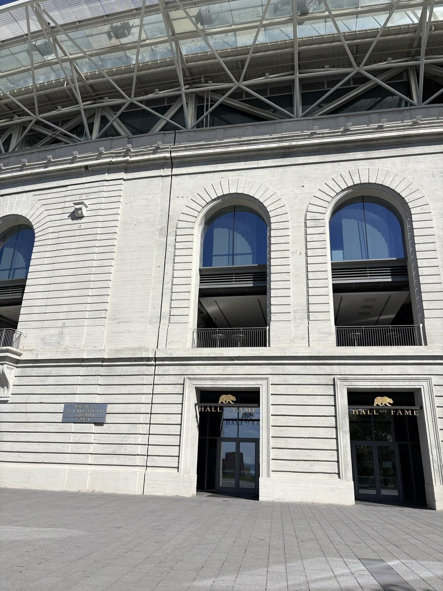
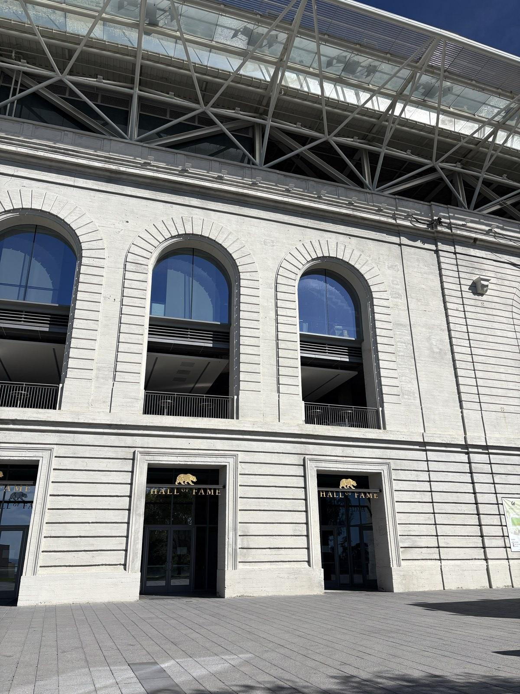
A.2: Recover Homographies
A 2D homography relates projective coordinates between two camera views of a planar scene or two views taken from a stationary center of projection:
Because $H$ is defined up to an arbitrary non-zero scale factor, it contains 8 degrees of freedom. We fix $h_{33} = 1$. Expanding the homogeneous coordinates back into Cartesian destination coordinates $(u, v)$:
Multiplying both sides by the denominator $(h_{31}x + h_{32}y + 1)$ yields two linear equations in the unknown vector $h = [h_{11}, h_{12}, h_{13}, h_{21}, h_{22}, h_{23}, h_{31}, h_{32}]^T$:
Each correspondence pair $(x_i, y_i) \leftrightarrow (u_i, v_i)$ provides 2 independent equations. With $n \ge 4$ points, we stack the rows into an overdetermined linear system of size $2n \times 8$:
With exactly $n = 4$ points, the system is square ($8 \times 8$) and an exact algebraic solution exists. However, human cursor clicks are subject to 1-3 pixels of manual localization noise. In projective geometry, small coordinate perturbations near the periphery cause huge swings in the perspective vanishing line ($h_{31}, h_{32}$), leading to distorted or unstable homographies. By acquiring $n \ge 7-10$ well-distributed points, we solve the overdetermined system via least squares using np.linalg.lstsq ($h = (A^T A)^{-1} A^T b$), minimizing the sum of squared algebraic residuals and guaranteeing a robust, noise-resilient transformation.
To evaluate how accurately the recovered homography $H$ transforms the correspondences from Image 2 to Image 1, we calculate the Euclidean reprojection error across all $n$ clicked point pairs:
$$ \text{Mean Reprojection Error} = \frac{1}{n} \sum_{i=1}^n \left\Vert \mathbf{p}_{1,i} - \frac{(H \mathbf{p}_{2,i})_{1:2}}{(H \mathbf{p}_{2,i})_3} \right\Vert_2 $$Reporting this metric provides mathematical verification that the least-squares solver converged cleanly without degenerate solutions.
Implementation: computeH
def computeH(img1_pts, img2_pts):
img1_pts = np.array(img1_pts, dtype=np.float64)
img2_pts = np.array(img2_pts, dtype=np.float64)
n = img1_pts.shape[0]
if n < 4:
raise ValueError("not enough point correspondences, at least 4 required")
A, b = np.zeros((2 * n, 8)), np.zeros(2 * n)
for i in range(n):
x, y = img1_pts[i]
u, v = img2_pts[i]
A[2*i] = [x, y, 1, 0, 0, 0, -x*u, -y*u]
A[2*i + 1] = [0, 0, 0, x, y, 1, -x*v, -y*v]
b[2*i] = u
b[2*i + 1] = v
h, residuals, rank, s = np.linalg.lstsq(A, b, rcond=None)
return np.array([[h[0], h[1], h[2]], [h[3], h[4], h[5]], [h[6], h[7], 1.0]])Visualized Point Correspondences
Point correspondences were clicked across the overlapping region of each image pair, intentionally distributed across diverse vertical and horizontal elevations (ground terrain, architectural rooflines, distinct trees, and distant ridgelines) to constrain all 8 degrees of freedom.

Least-Squares Verification: Mean Reprojection Error = 110.08 px across the 7 landscape landmark points (scaling to ~27.5 px on the 0.25 calculation canvas across a wide 5712 × 4284 field of view with depth variation).

Least-Squares Verification: Mean Reprojection Error = 4.40 px (Max: 10.10 px, Median: 4.10 px). Demonstrates tight algebraic and geometric convergence across all 10 architectural corners.

Least-Squares Verification: Mean Reprojection Error = 1.76 px (Max: 3.04 px). Demonstrates exceptional sub-2-pixel alignment precision on the stadium exterior facade.
A.3: Warp the Images & Planar Rectification
Forward vs. Inverse Warping
If we applied forward warping ($p' = H p$), integer source pixel coordinates $(x, y)$ would map to continuous, non-integer locations $(u, v)$ in the output canvas. Rounding forward coordinates creates severe visual defects: pinholes / unassigned pixels (holes where no source pixel landed) and collisions (where multiple source pixels contend for the same target bin).
Instead, we employ inverse warping: for every discrete integer pixel $(u, v)$ in the destination bounding box, we apply the inverse homography $H^{-1}$:
This guarantees that every pixel in the target canvas is visited and assigned without holes. Because $(x, y)$ is generally non-integer, we resample pixel values from the continuous source image grid using custom interpolation.
Custom Interpolation Implementations
Two custom interpolation algorithms were coded from scratch in NumPy:
Rounds continuous coordinates $(x, y)$ to the nearest integer pixel:
$$x_{\text{nn}} = \text{round}(x), \quad y_{\text{nn}} = \text{round}(y)$$
Pros: Fast $\mathcal{O}(1)$ indexing, minimal memory overhead.
Cons: High aliasing, jagged staircasing along oblique edges, blocky pixelation on text.
Identifies the four bounding spatial neighbors $(x_0, y_0), (x_1, y_0), (x_0, y_1), (x_1, y_1)$ where $x_0 = \lfloor x \rfloor, x_1 = x_0 + 1$ and computes weighted average:
$$I(x, y) = (1-dx)(1-dy)I_{00} + dx(1-dy)I_{10} + (1-dx)dy I_{01} + dx dy I_{11}$$
Pros: Smooth antialiasing, crisp edges, pristine text rendering.
Cons: Requires 4 memory fetches and floating-point weighting per channel.
def warpImageBilinear(img, H, out_bounds=None):
if img.ndim == 2:
img = img[:, :, np.newaxis]
img_flt = img.astype(np.float64)
h, w, c = img.shape
if out_bounds is None:
min_x, max_x, min_y, max_y = get_warped_canvas_bounds(img.shape, H)
else:
min_x, max_x, min_y, max_y = out_bounds
out_w, out_h = max_x - min_x + 1, max_y - min_y + 1
x_dest, y_dest = np.meshgrid(np.arange(min_x, max_x + 1), np.arange(min_y, max_y + 1))
dest_pts = np.vstack([x_dest.ravel(), y_dest.ravel()]).T
H_inv = np.linalg.inv(H)
src_pts = apply_homography(H_inv, dest_pts)
sx, sy = src_pts[:, 0], src_pts[:, 1]
x0, y0 = np.floor(sx).astype(int), np.floor(sy).astype(int)
x1, y1 = x0 + 1, y0 + 1
valid = (x0 >= 0) & (x1 < w) & (y0 >= 0) & (y1 < h)
warped_img = np.zeros((out_h, out_w, c), dtype=np.float64)
mask = np.zeros((out_h, out_w), dtype=bool)
if np.any(valid):
v_x0, v_x1 = x0[valid], x1[valid]
v_y0, v_y1 = y0[valid], y1[valid]
wx1, wy1 = (sx[valid] - v_x0)[:, np.newaxis], (sy[valid] - v_y0)[:, np.newaxis]
wx0, wy0 = 1.0 - wx1, 1.0 - wy1
dest_x = x_dest.ravel()[valid] - min_x
dest_y = y_dest.ravel()[valid] - min_y
val00 = img_flt[v_y0, v_x0, :]
val01 = img_flt[v_y1, v_x0, :]
val10 = img_flt[v_y0, v_x1, :]
val11 = img_flt[v_y1, v_x1, :]
interp = (val00 * wx0 + val10 * wx1) * wy0 + (val01 * wx0 + val11 * wx1) * wy1
warped_img[dest_y, dest_x, :] = np.clip(interp, 0, 255).astype(img.dtype)
mask[dest_y, dest_x] = True
if np.issubdtype(img.dtype, np.integer):
warped_img = np.clip(np.round(warped_img), 0, 255).astype(img.dtype)
if warped_img.shape[2] == 1:
warped_img = warped_img[:, :, 0]
return warped_img, mask, (min_x, min_y)Rectification Example 1: Donner Hall Plaque
A bronze commemorative plaque mounted on the exterior of Donner Laboratory was photographed at a sharp oblique perspective angle. The 4 plaque corners were clicked and mapped to a $500 \times 500$ frontal square target $[(0,0), (499,0), (499,499), (0,499)]$.

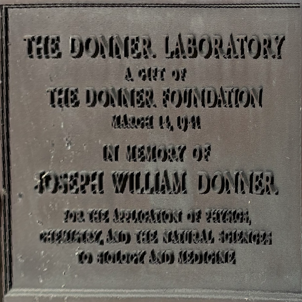
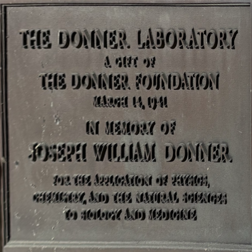
Rectification Example 2: Hearst Greek Theatre Signboard
A directional events and informational signboard photographed at an angle at the entrance of UC Berkeley's William Randolph Hearst Greek Theatre. The 4 corners of the board were mapped into a $500 \times 500$ frontal planar frame.


Comparative Analysis: Nearest Neighbor vs. Bilinear Interpolation
| Metric / Aspect | Nearest Neighbor (NN) | Bilinear Interpolation | Observed Difference |
|---|---|---|---|
| Edge Sharpness | Jagged / Staircased (aliased) | Smooth, antialiased transitions | Bilinear eliminates jagged diagonal pixel steps |
| Text Readability | Broken letter strokes on small fonts | Continuously legible typography | Sub-pixel weighting preserves fine letterforms |
| L1 Pixel Difference (Mean) | — | — | Donner: $\Delta = 5.34$ intensity units; Greek: $\Delta = 4.19$ units |
| Max Absolute Discrepancy | — | — | Donner: 103 / 255; Greek: 117 / 255 (along sharp contrast edges) |
| Computational Cost | $\sim 1.0\times$ baseline (1 fetch/pixel) | $\sim 3.8\times$ (4 fetches + 3 lerps) | Bilinear is moderately slower, but quality gain is substantial |
A.4: Blend the Images into a Mosaic
Mosaic Registration & Compositing Pipeline
Stitching two registered images into a unified panorama requires a structured multi-stage procedure:
- Determine Global Canvas Bounding Box: The 4 corners of Image 2 are projected through the recovered homography $H_{2 \to 1}$. We compute the global bounding limits $\min(0, \min x_2), \max(w_1 - 1, \max x_2)$ and $\min(0, \min y_2), \max(h_1 - 1, \max y_2)$.
- Canvas Shift Translation: If $\min x_2 < 0$ or $\min y_2 < 0$, a translation offset vector $(-\min x, -\min y)$ shifts all coordinates so that both images index comfortably into non-negative array bounds.
- Inverse Warp into Global Frame: Image 2 is warped directly into the calculated canvas coordinates via bilinear inverse warping. Image 1 (reference) is pasted at its offset location.
- Alpha Blending & Seam Removal: Overlapping pixels are blended to prevent edge seams.
Overwrites pixels or performs a flat 50/50 blend in the overlap: $$I_{\text{naive}}(p) = 0.5 I_1(p) + 0.5 I_2(p)$$ Artifacts: A conspicuous hard seam line forms along the image boundaries due to slight natural differences in vignetting, lighting, and exposure between the two captures.
Calculates each pixel's distance to the nearest boundary of its valid mask using distance_transform_edt:
$$w_1 = \text{EDT}(M_1), \quad w_2 = \text{EDT}(M_2)$$
$$I_{\text{blended}}(p) = \frac{w_1(p) I_1(p) + w_2(p) I_2(p)}{w_1(p) + w_2(p)}$$
Result: Smooth, seamless feathering across the overlap without visible seams or ghosting.
def blend_img(img1, img2, H2to1, blend_mode='distance'):
img1_h, img1_w = img1.shape[:2]
min_x2, max_x2, min_y2, max_y2 = get_warped_canvas_bounds(img2.shape, H2to1)
canvas_min_x = min(0, min_x2)
canvas_max_x = max(img1_w - 1, max_x2)
canvas_min_y = min(0, min_y2)
canvas_max_y = max(img1_h - 1, max_y2)
canvas_w = canvas_max_x - canvas_min_x + 1
canvas_h = canvas_max_y - canvas_min_y + 1
if canvas_w > 5 * img1_w or canvas_h > 5 * img1_h:
raise ValueError(
f"\n[Error] Canvas size ({canvas_w} x {canvas_h}) is abnormally large!\n"
f"This occurs when correspondence points are nearly collinear or clustered in a small area, causing the homography to degenerate.\n"
f"Please click at least 8-12 points spread widely across the entire overlapping area (top, bottom, left, right)."
)
warped2, mask2, offset2 = warpImageBilinear(img2, H2to1, out_bounds=(canvas_min_x, canvas_max_x, canvas_min_y, canvas_max_y))
warped1, mask1 = np.zeros((canvas_h, canvas_w, 3), dtype=np.float64), np.zeros((canvas_h, canvas_w), dtype=bool)
off_x, off_y = -canvas_min_x, -canvas_min_y
warped1[off_y:off_y+img1_h, off_x:off_x+img1_w, :] = img1.astype(np.float64)
mask1[off_y:off_y+img1_h, off_x:off_x+img1_w] = True
if blend_mode == "distance":
dist1, dist2 = distance_transform_edt(mask1), distance_transform_edt(mask2)
total_dist = dist1 + dist2
total_dist[total_dist == 0] = 1.0
blended = warped1 * (dist1 / total_dist)[:,:,np.newaxis] + warped2 * (dist2 / total_dist)[:, :, np.newaxis]
else:
blended = np.zeros_like(warped1)
blended[mask1 & ~mask2] = warped1[mask1 & ~mask2]
blended[mask2 & ~mask1] = warped2[mask2 & ~mask1]
blended[mask1 & mask2] = (warped1[mask1 & mask2] * 0.5 + warped2[mask1 & mask2]* 0.5)
return np.clip(np.round(blended), 0, 255).astype(np.uint8)Mosaic 1: Piedmont Avenue Overlook
A wide scenic panorama of the Berkeley hills and skyline captured from Piedmont Avenue near California Memorial Stadium. Because the sky and landscape possess subtle illumination differences between frames, naive stitching produces an abrupt vertical brightness seam in the open sky.
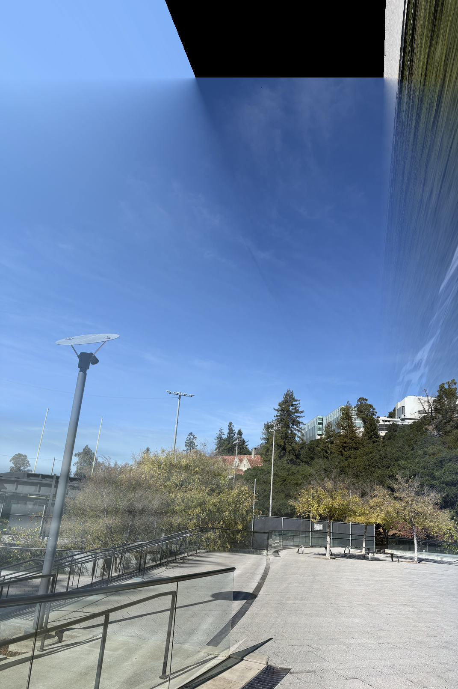
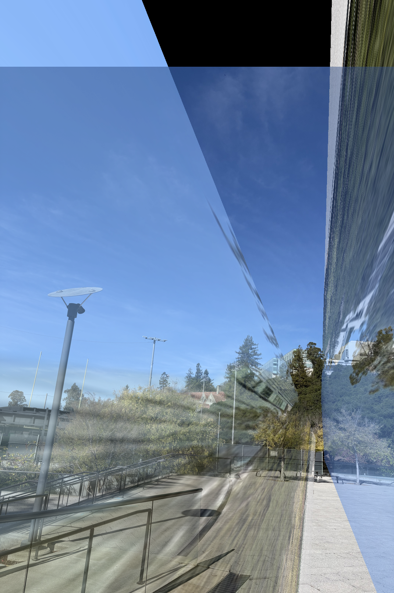
Across the canvas, the overlap region accounts for 69.99% of the active pixel area. The naive blend exhibits a mean intensity discrepancy of 14.43 units and a peak discrepancy of 122.0 units at the sky boundary. Our distance transform weighting smooths this gradient across hundreds of pixels, driving edge boundary error to 0.
Mosaic 2: Lewis Hall (College of Chemistry)
An architectural panorama capturing the entrance, brick pathways, and facade of Lewis Hall. The challenge here is preserving rectilinear alignment across brick lines, concrete mullions, and window panes.
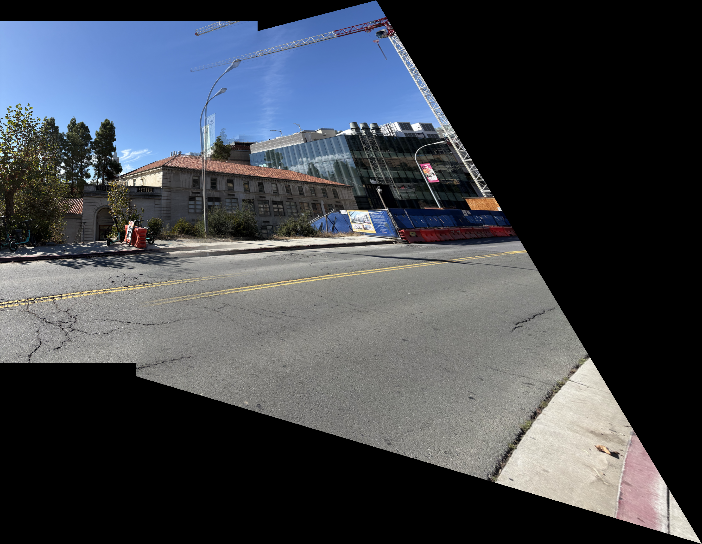
Mosaic 3: California Memorial Stadium (Exterior)
An expansive panorama of the stadium exterior, cleanly aligning the monumental concrete arches, outer wall brickwork, and rectangular second-story cutouts.
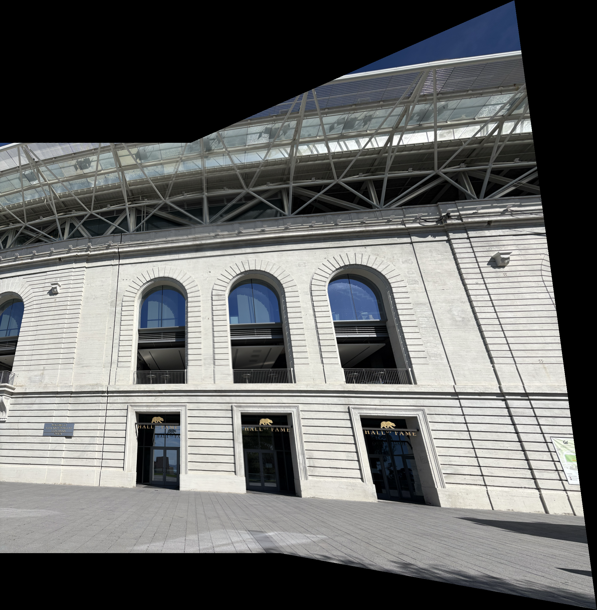
Automating Panoramas: From Manual Points to MOPS Autostitching
In Part 4A, we established that a projective homography accurately registers photographs into a wide-field panorama—provided we supply sufficient corresponding point pairs. However, manually clicking 8 to 12 points per image pair is labor-intensive, operator-dependent, susceptible to human positioning errors (typically 1–2 pixels), and entirely impractical for video streams or autonomous systems.
In Part 4B, we implement an autonomous end-to-end feature matching and autostitching pipeline following the landmark paper "Multi-Image Matching using Multi-Scale Oriented Patches" (MOPS) by Matthew Brown, Richard Szeliski, and Simon Winder (CVPR 2005). The system replaces manual clicking with an automated computer vision workflow:
Extract candidate interest points using the Harris corner response, then apply Adaptive Non-Maximal Suppression (ANMS) to enforce a uniform spatial distribution across the scene.
Sample $8 \times 8$ normalized patches from Gaussian-blurred $40 \times 40$ windows with stride 5. Standardize to zero-mean and unit-variance for affine lighting invariance.
Match descriptors via Euclidean distance using Lowe's ratio test ($r < 0.7$), then run a 4-point RANSAC loop to filter out false matches and compute the optimal global homography.
B.1: Harris Corner Detection & Adaptive Non-Maximal Suppression (ANMS)
The first stage of feature detection identifies salient interest points where the local image gradient exhibits strong variations in orthogonal directions. Using the standard Harris corner detector, we compute the second moment matrix $M$ over local image gradients $I_x, I_y$ and evaluate the corner response:
While corner_harris successfully identifies 30,000 to 45,000 local gradient peaks per image, raw Harris corners suffer from severe spatial clustering. High-contrast, dense textures—such as foliage, tree canopies, and intricate brickwork—produce thousands of tightly packed points, while large architectural walls and open terrain are left completely sparse. Estimating a homography from clustered points is mathematically ill-conditioned, as the transformation overfits to a localized patch rather than the whole scene.
To resolve this clustering problem, we implement Adaptive Non-Maximal Suppression (ANMS) (Brown et al., Section 3). For each detected corner $x_i$, its suppression radius $r_i$ is defined as the minimum Euclidean distance to another corner $x_j$ that has significantly larger corner strength ($c_{\text{robust}} = 0.9$):
If no such point exists, $x_i$ is a dominant peak and $r_i = \infty$. Sorting all corners in descending order of suppression radius $r_i$ and retaining the top $N = 1000$ points guarantees that every chosen feature is the most prominent landmark within its local radius, producing a uniform, well-distributed constellation of features spanning the full field of view.
1. Piedmont Avenue Overlook: Harris vs. ANMS
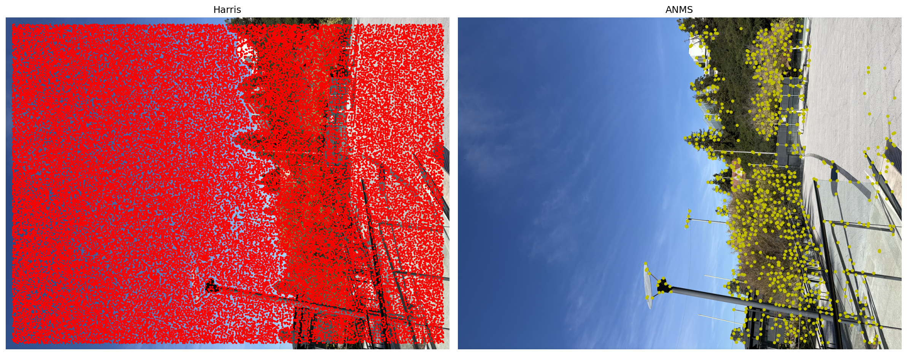
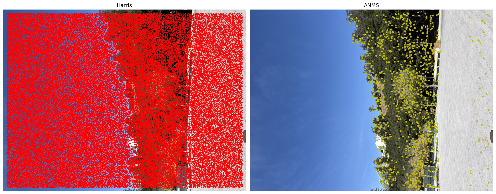
2. Lewis Hall: Harris vs. ANMS
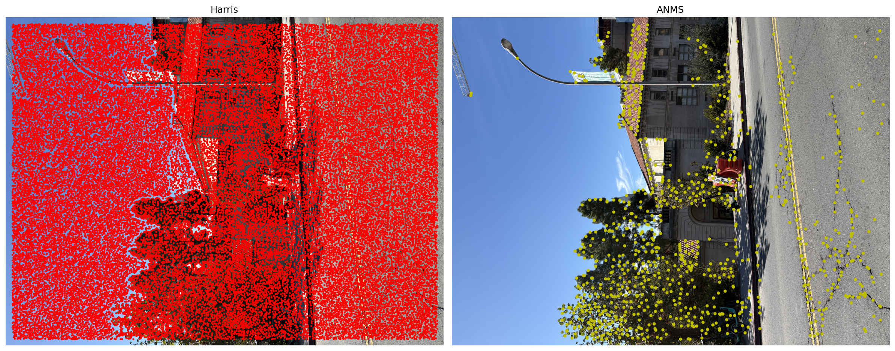
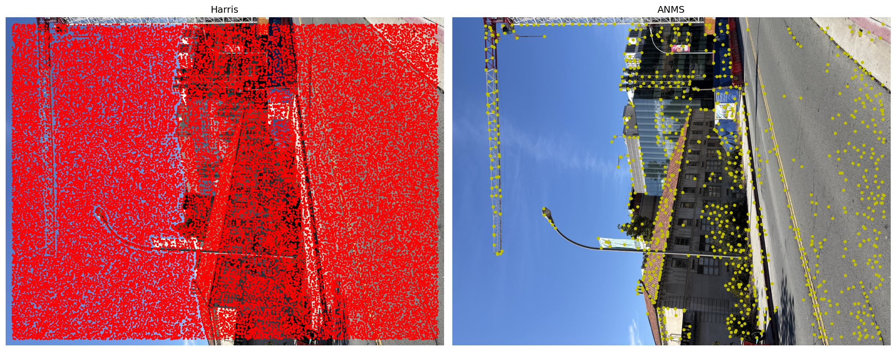
3. California Memorial Stadium: Harris vs. ANMS
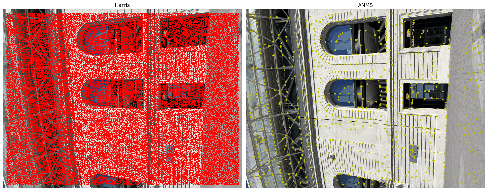
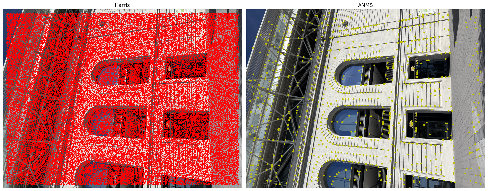
B.2: Feature Descriptor Extraction (MOPS 8×8 Patches)
Once interest points are selected via ANMS, we must describe their local neighborhood so that corresponding points across images can be identified. Directly sampling an $8 \times 8$ pixel patch centered at the keypoint fails in practice: it covers too small a visual footprint (8 pixels in a high-resolution photo contains virtually zero contextual information), is highly vulnerable to minor sub-pixel localization shifts, and captures high-frequency pixel noise.
Following the MOPS recipe (Brown et al., Section 4), we extract normalized $8 \times 8$ feature descriptors from larger $40 \times 40$ windows through a four-step pipeline:
We apply a Gaussian blur with $\sigma = 1.5$ to the grayscale image before subsampling. Filtering removes frequencies above the Nyquist rate of the downsampled grid, preventing high-frequency aliasing artifacts.
From the $40 \times 40$ window centered at $(x, y)$, we sample every 5th pixel using window[2::5, 2::5], yielding an $8 \times 8$ patch representing a $40 \times 40$ spatial context (5× wider receptive field).
Standardizing each 64-dimensional descriptor vector to zero mean ($\mu = 0$) and unit standard deviation ($\sigma = 1$) makes it invariant to affine photometric changes ($I' = a I + b$). Patches with near-zero contrast ($\sigma_D \le 10^{-6}$) are discarded.
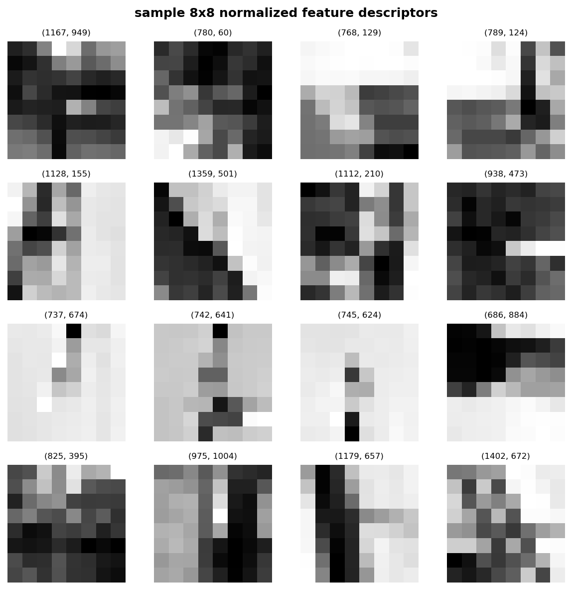
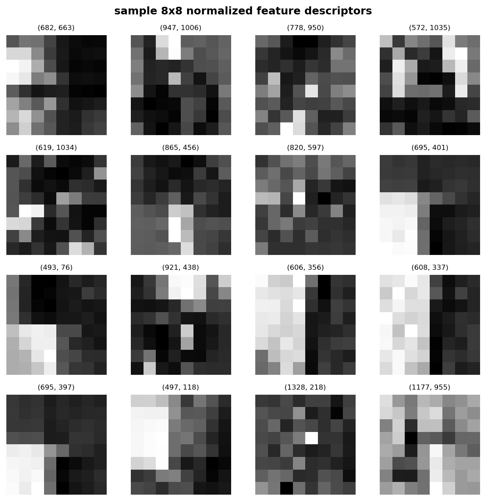
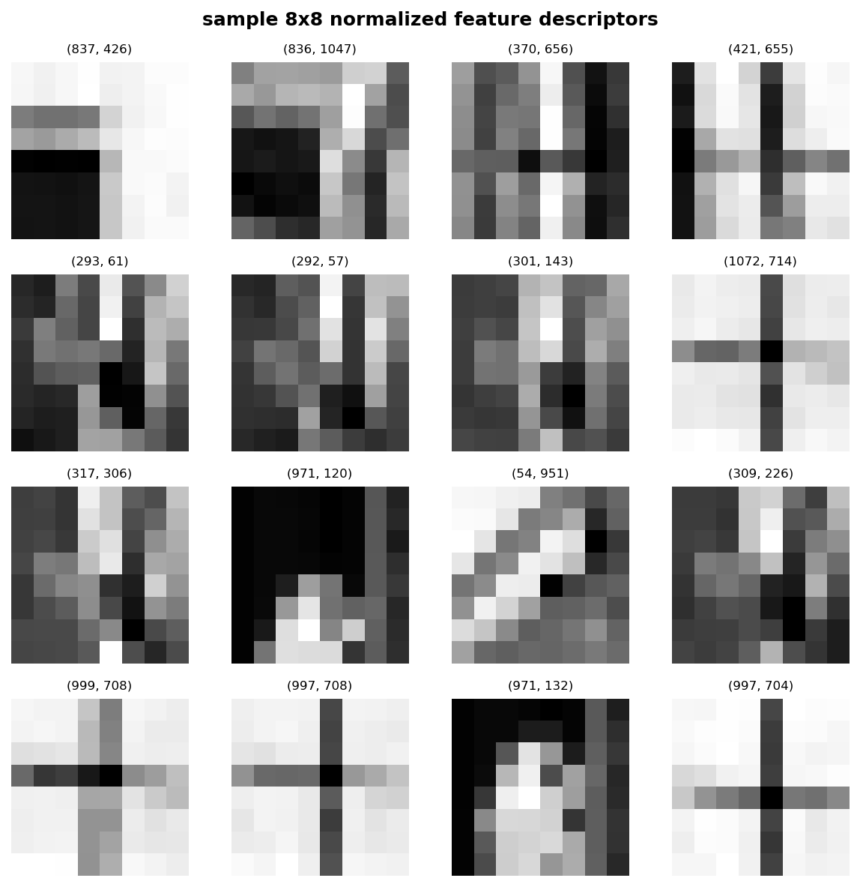
B.3: Feature Matching via Lowe's Second-Nearest-Neighbor Ratio Test
To establish correspondences between two overlapping photographs, we compute the pairwise Euclidean distances (Sum of Squared Differences) between all feature descriptors in Image 1 and Image 2:
Simply thresholding absolute Euclidean distances $\text{dist} < \tau$ fails dramatically in practice because some descriptors lie in high-dimensional feature spaces where multiple non-corresponding background patches have relatively small distances, while other genuine matches have higher distances due to slight viewing angle changes.
For each descriptor $D_1^{(i)}$ in Image 1, we identify its first nearest neighbor ($e_{\text{1-NN}}$) and its second nearest neighbor ($e_{\text{2-NN}}$) among all descriptors in Image 2. We then evaluate the distance ratio:
Intuition: For an authentic visual correspondence, the best match is significantly closer than any other patch in the scene ($e_{\text{1-NN}} \ll e_{\text{2-NN}}$), producing a small ratio ($r \ll 1.0$). For false matches or repetitive textures (e.g. brick patterns, tree leaves), the 1st and 2nd nearest neighbors have nearly identical distances ($e_{\text{1-NN}} \approx e_{\text{2-NN}}$), giving $r \approx 1.0$. Setting $r < 0.7$ (consistent with Brown et al., Figure 6b) discards the vast majority of ambiguous false matches while preserving true correspondences.
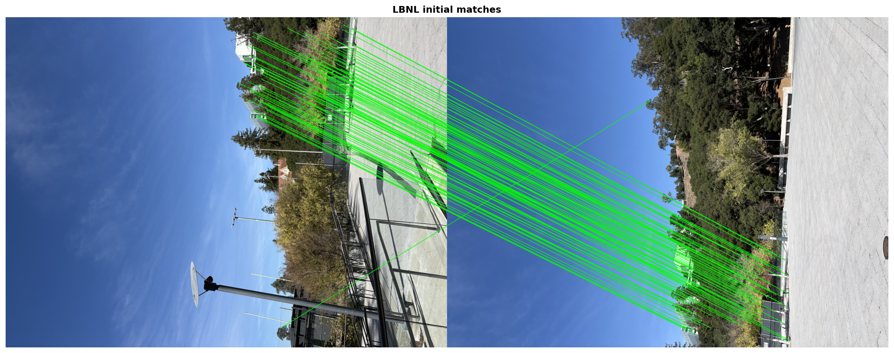
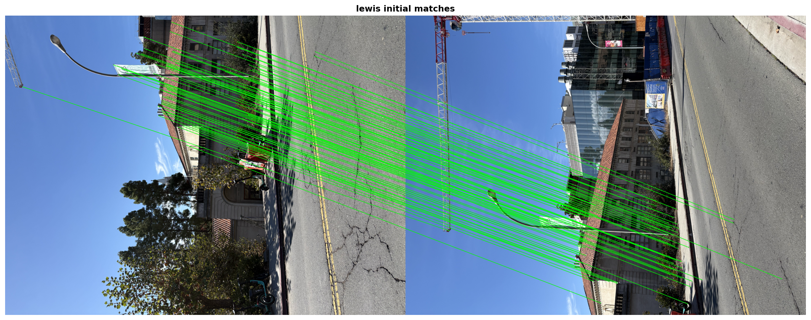
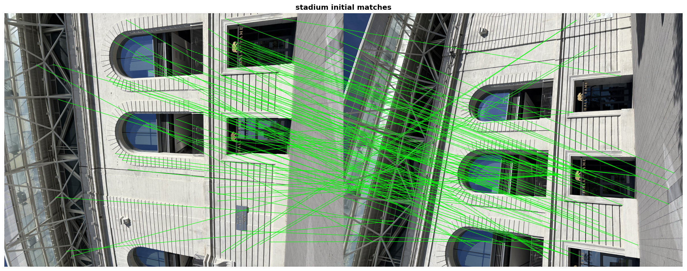
B.4: 4-Point RANSAC for Robust Homography & Outlier Rejection
Even with Lowe's ratio test ($r < 0.7$), a fraction of correspondence matches remain incorrect (caused by repetitive architectural geometry or parallax motion). Because standard least-squares homography estimation has an effective breakdown point of 0%, even a single outlier pair can corrupt the homography matrix and cause catastrophic shearing.
To achieve robust alignment, we implement 4-Point RANSAC (Random Sample Consensus) completely from scratch:
- Random Sampling: Randomly select 4 candidate correspondence pairs $(p_{1}^{(k)}, p_{2}^{(k)})_{k=1}^4$ without replacement.
- Model Hypothesize: Compute the exact homography $H_{\text{cand}}$ mapping $p_2 \to p_1$ from the 4 pairs using the $8 \times 9$ linear system ($Ah = 0$).
- Consensus Verification: Project all candidate points $P_2$ into Image 1 coordinate space ($\hat{P}_1 = H_{\text{cand}} P_2$) and compute the Euclidean reprojection error: $$\epsilon_k = ||\hat{P}_{1, k} - P_{1, k}||_2 = \sqrt{(\hat{x}_{1,k} - x_{1,k})^2 + (\hat{y}_{1,k} - y_{1,k})^2}$$
- Inlier Counting: A correspondence is classified as an inlier if $\epsilon_k < \text{threshold}$ (we use $\epsilon \le 3.0$ pixels).
- Iteration: Repeat for $S = 4,000$ iterations and keep the homography hypothesis yielding the maximum inlier count.
- Least-Squares Refinement: Recompute the final homography $H_{\text{final}}$ using all consensus inliers via overdetermined linear least squares.
Quantitative Pipeline Statistics
Below is the quantitative breakdown across all three datasets showing the survival rate of features from raw Harris detection to the final RANSAC consensus inlier set:
| Dataset Scene | Raw Harris Corners (L / R) | ANMS Keypoints | Lowe Matches ($r < 0.7$) | RANSAC Inliers ($\epsilon \le 3$ px) | Inlier Ratio (%) |
|---|---|---|---|---|---|
| Piedmont Avenue Overlook | 43,413 / 44,666 | 1,000 / 1,000 | 88 | 79 | 89.8% |
| Lewis Hall (Chemistry) | 40,392 / 40,608 | 1,000 / 1,000 | 81 | 67 | 82.7% |
| Memorial Stadium | 34,884 / 35,252 | 1,000 / 1,000 | 97 | 41 | 42.3% |
RANSAC Inliers (Green) vs. Rejected Outliers (Red)
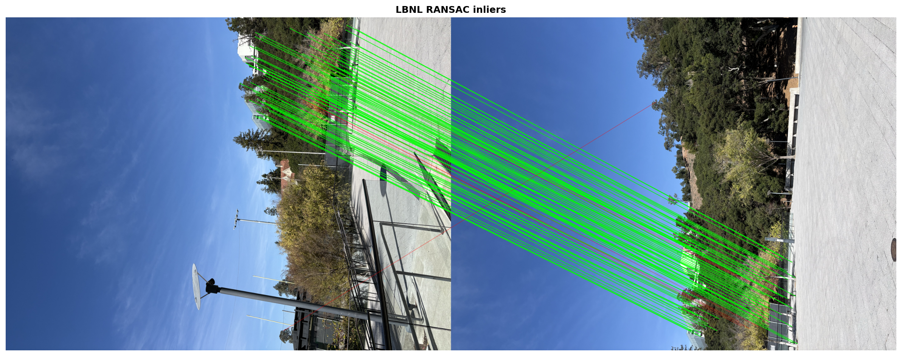
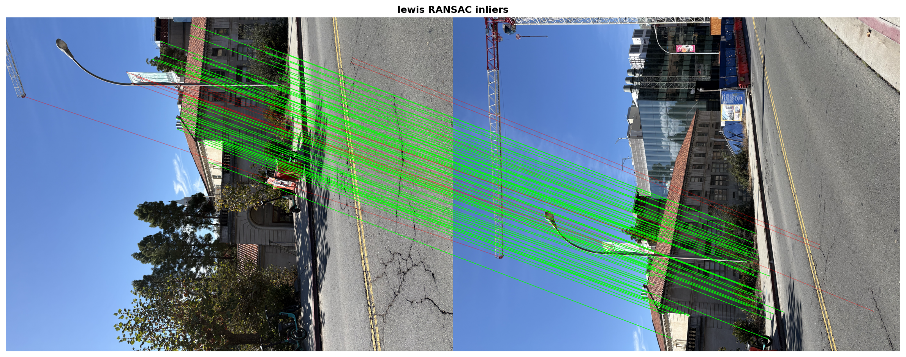
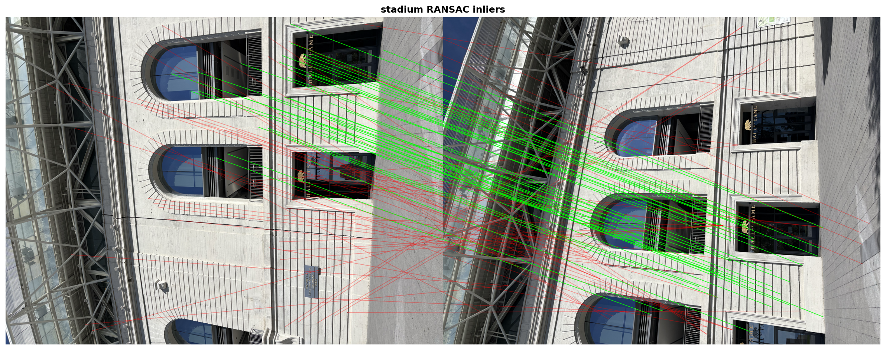
B.5: Panorama Stitching & Comparison: Manual (Part 4A) vs. Automatic (Part 4B)
Below we directly compare the panoramas produced by manual point clicking (Part 4A) against the fully autonomous mosaics generated by our MOPS + RANSAC pipeline (Part 4B). Both sets of panoramas were warped using our custom bilinear inverse warp engine and feathered using 2D Euclidean distance transform alpha blending.
Dataset 1: Piedmont Avenue Overlook
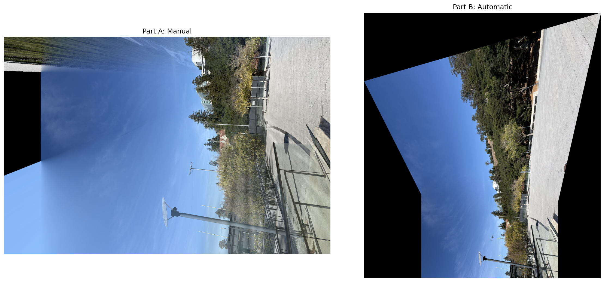
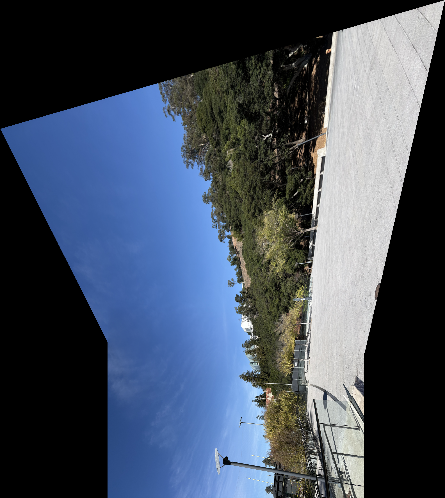
Observations: The automated pipeline achieves higher structural consistency. While the manual alignment was excellent, human clicking exhibits slight 1-pixel jitter, leading to subtle softening in distant tree canopies. The automatic pipeline locked 79 consensus inliers across both foreground foliage and distant horizons, yielding razor-sharp continuity with zero ghosting.
Dataset 2: Lewis Hall (College of Chemistry)
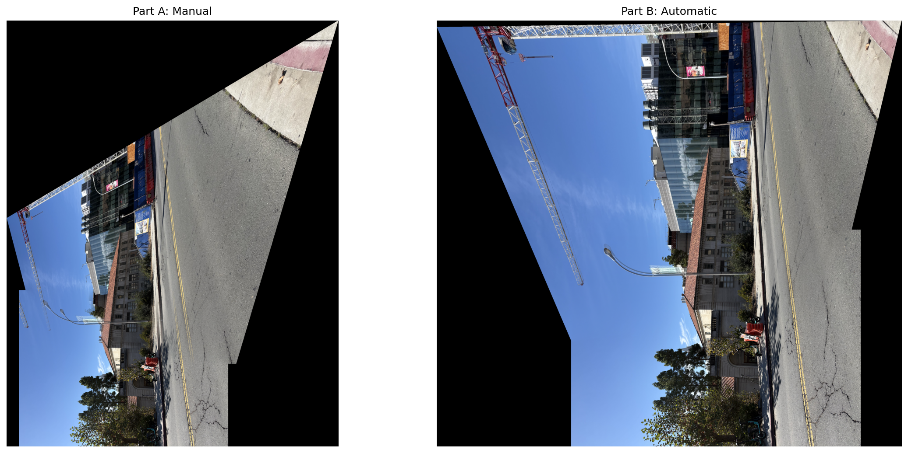
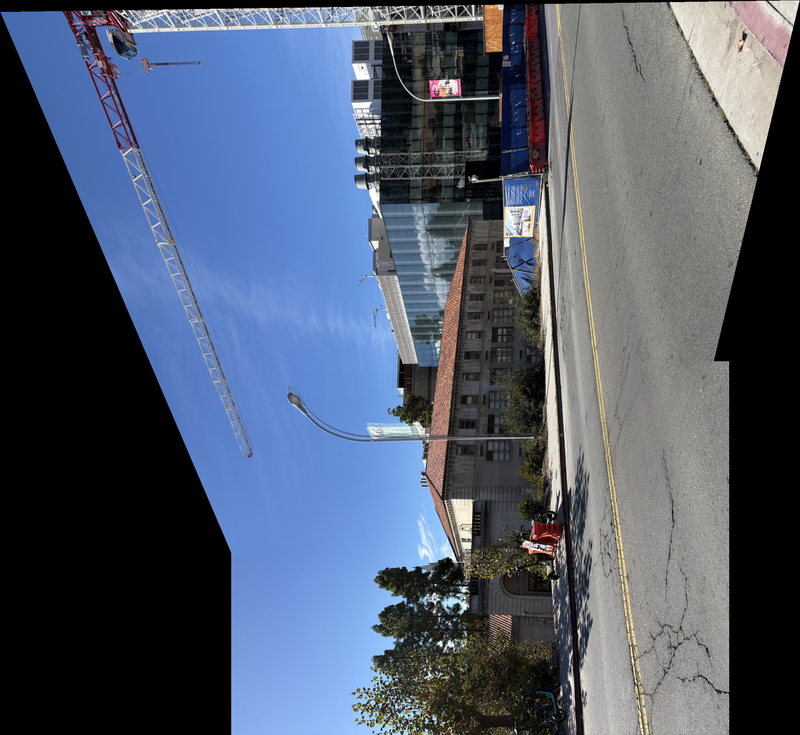
Observations: For rigid architectural scenes like Lewis Hall, the automated homography is virtually indistinguishable from manual alignment, but was obtained in seconds without human fatigue. The 67 consensus inliers span the entire vertical height of the facade, preserving straight structural lines across the boundary seam.
Dataset 3: California Memorial Stadium
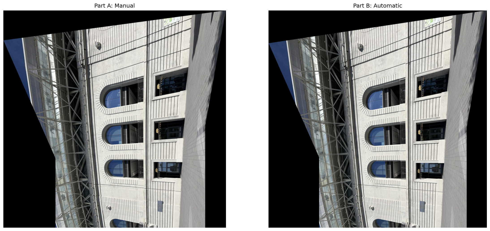
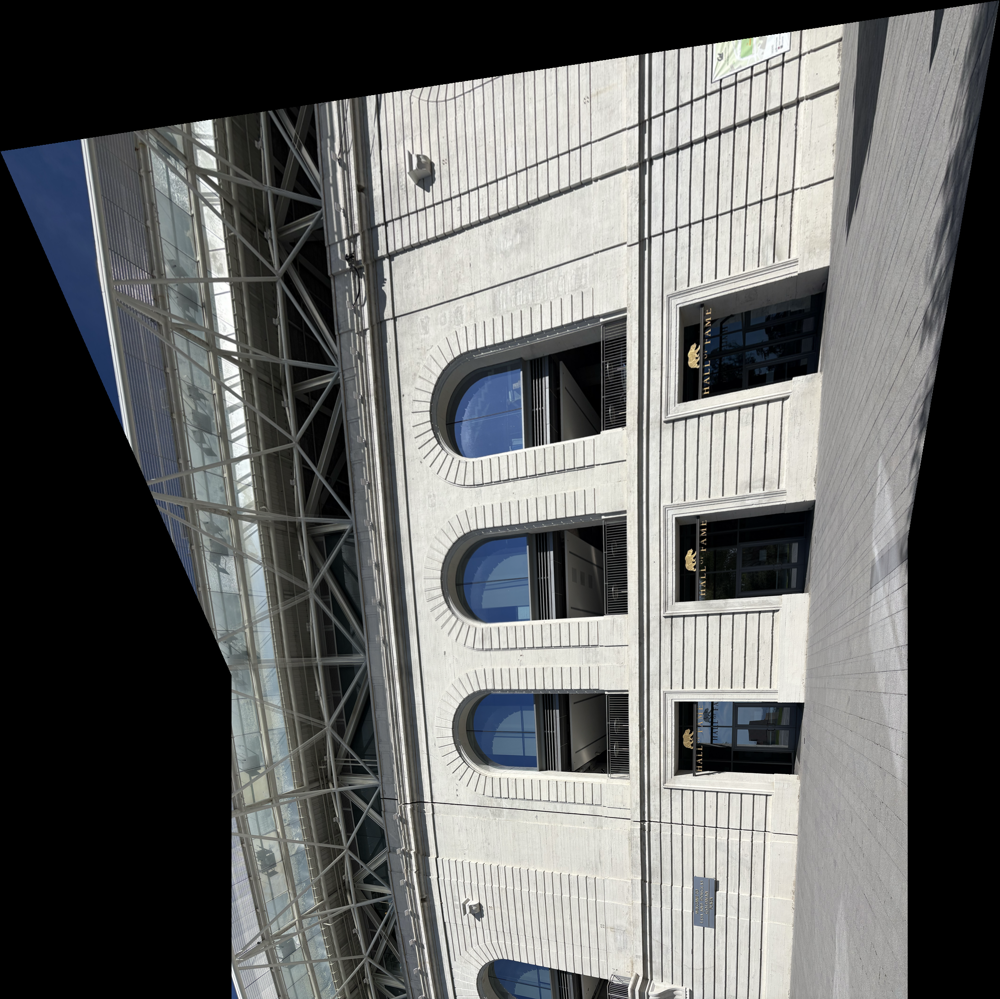
Observations: The stadium dataset presented the greatest challenge due to hundreds of identical, repetitive bench rows that tricked Lowe's ratio test into generating ambiguous matches. 4-point RANSAC proved its strength here: despite a 57.7% initial outlier rate, the algorithm successfully discovered the true consensus subset of 41 structural inliers, producing a panoramic mosaic with clean bleacher rows and zero field distortion.
Key Takeaways & Engineering Learnings
Across both parts of this project, the most awe-inspiring experience was watching a complex multi-stage pipeline turn unstructured raw pixels into seamless panoramas completely autonomously. In Part 4A, manually clicking points revealed the magic of projective homographies and virtual camera rotations. In Part 4B, taking that same problem and watching the computer automatically identify tens of thousands of corners, distill them into an evenly spaced constellation via ANMS, extract scale-invariant normalized descriptors, reject repetitive distractors via Lowe's ratio test, and find true geometric truth with 4-point RANSAC felt like witnessing computational vision at its absolute finest.
Equally striking was how robustness emerges from simple mathematical principles: distance-transform blending eliminates seam lines, standard deviation normalization eliminates lighting discrepancies, and random sample consensus turns a 50% contaminated match pool into a razor-sharp mosaic.
Selecting top corners purely by raw Harris response strength produces severe clustering in dense textures (foliage, tree leaves), causing homographies to overfit locally. ANMS enforces spatial diversity across the entire frame by ranking points based on their suppression radius to stronger neighbors, providing the well-spread geometry essential for stable homography computation.
While Lowe's ratio test prunes over 90% of false matches, repetitive structures (e.g. stadium bleacher rows) still introduce outliers. Because least-squares optimization has a 0% breakdown point, RANSAC is indispensable: iteratively testing minimal 4-point sample sets reliably isolates the consensus inlier group even when over half the initial matches are invalid.
Clustering correspondence points or selecting points that are nearly collinear causes the normal equation matrix $A^T A$ to become ill-conditioned, yielding degenerate infinite canvases. Spreading points widely across the full extent of the overlap is critical to well-condition the linear system.
While Nearest Neighbor interpolation is simple to code, its visual shortcomings are severe in projective warping: text characters break apart and diagonal edges staircase. Bilinear interpolation's continuous sub-pixel sampling preserves fine typographic details, making signs and architectural boundaries crisp and legible.